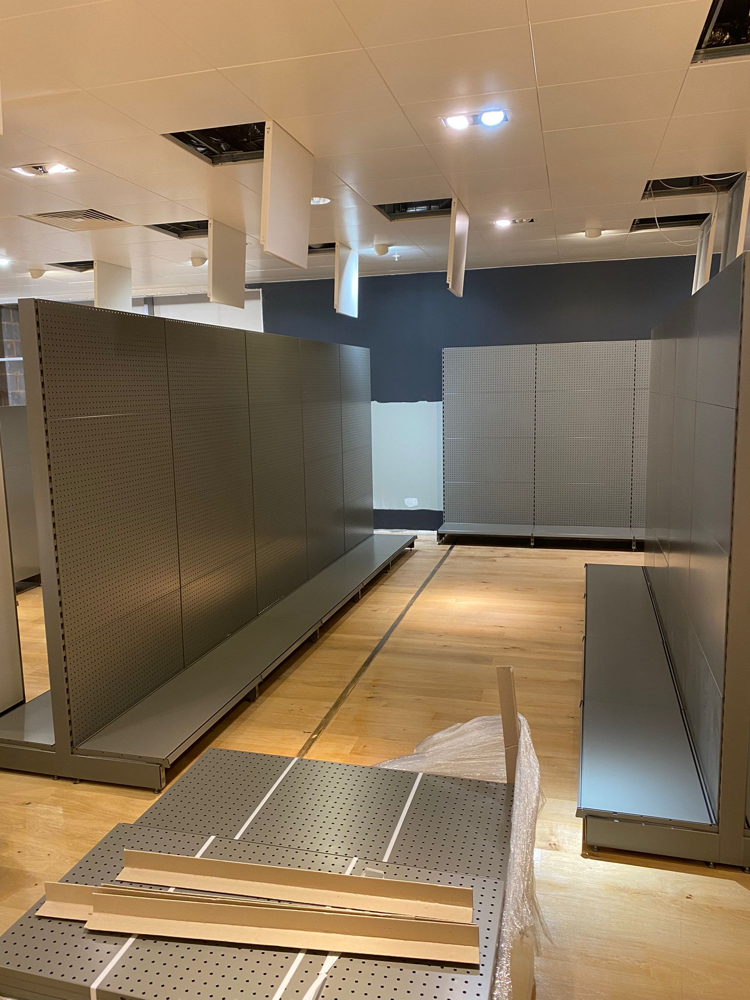

Retail delivery
Shopfitting & National Rollouts
Store programmes, fixture builds and rollouts using your actual project archive.
Project photography




Store programmes, fixture builds and rollouts using your actual project archive.
